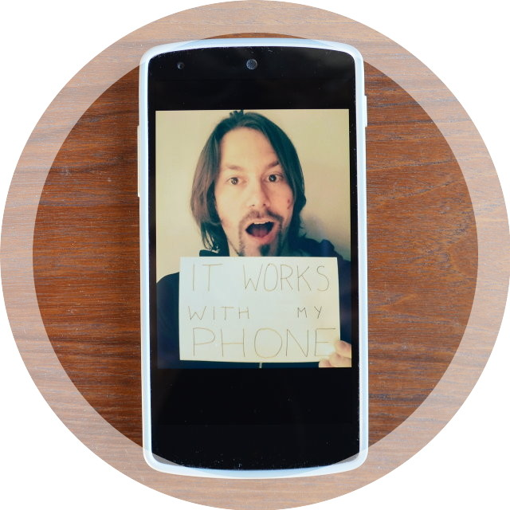

Integrate your Mobile App
Mobile applications can seamlessly integrate with reelyActive Smart Spaces using Bluetooth Smart (BLE) technology. Apple devices since the iPhone 4S support Bluetooth Smart, and more recent Android devices, as well as those of other platforms, also support this technology. This tutorial is divided based on how the mobile device and the reelyActive infrastructure discover one another, either:
- the reelyActive infrastructure advertises itself to the mobile device, or
- the mobile device advertises itself to the reelyActive infrastructure, or
- both happen in harmony
reelyActive advertises ➞ mobile device
Our Bluetooth Smart reelceivers continuously advertise the following information which can be decoded by any listening Bluetooth Smart devices in range:
completeLocalName: reelyActive 128-bit UUID: 7265656c794163746976652055554944 EUI-64 identifier (Service Data): 001bc5094xxxxxxx MAC address: xx:xx:xx:xx:xx:xx The completeLocalName and 128-bit UUID are generic to all reelceivers, while the EUI-64 and MAC uniquely identify each reelceiver (hence the x values above).
How do I make use of this in my app?
Your app can discover the context of its current location and all the other devices present in just four steps:
- subscribe to the reelyActive 128-bit UUID
- when a reelceiver is detected (by its UUID)
- determine which reelceiver is detected with the greatest signal strength (RSSI)
- take the EUI-64 identifier of that reelceiver
- query our API (hlc-server) based on that EUI-64 identifier
- extract all the data of interest from the query response
We'll provide platform-specific details soon. For iOS devices, you can use the LightBlue app for inspiration, and for Android devices try Bluetooth LE Scanner.
Mobile device advertises ➞ reelyActive

Currently only iOS devices support Bluetooth Smart peripheral mode which allows the spontaneous transmission of advertising packets (which can be detected by our reelceivers). BUT there's still a clever way to get devices from other platforms to integrate with reelyActive infrastructure: read the next section!
In order for the mobile device to fully integrate with our infrastructure, it needs to transmit advertising data that allows it to be uniquely identified. There are a few options, each described in a subsection below.
iBeacons
An iOS device can send iBeacons packets which contain, among other things, the following data:
UUID: 128-bits Major ID: 16-bits Minor ID: 16-bits Our Bluetooth Smart reelceivers decipher each of these identifiers, so the app need only transmit some combination of the three which makes the device uniquely identifiable. An app will typically use a single UUID and then assign non-conflicting major and minor values to all participating devices.
For instance, if you use the Radius Networks Locate Beacon app and select the iBeacon Transmitter option with major set to 0 and minor set to 1, our API will return the following (some fields trimmed for clarity):
identifier: { type: "ADVA-48", value: "123456789abc", advHeader: { txAdd: "random" }, advData: { manufacturerSpecificData: { iBeacon: { uuid: "1675e3a3932a458c9ed907a290622635", major: "0000", minor: "0001", } } } } As you can see, the API allows the mobile device to be uniquely identified by the UUID, major and minor. Notice also that it identifies the mobile device by its 48-bit advertiser address (123456789abc), however, the txAdd: "random" flag indicates that this address isn't constant. In other words, the advertiser address can be expected to change over time.
To complete the integration, you would contact us so that we can update hlc-server (our API) to associate your UUID with the URL of an API that you would host. Users of our API would then be pointed to http://yourapi.com/majorminor to access metadata associated with your app user.
Advertise a service
An alternative with less vendor-lock-in than Apple's iBeacons is to advertise a service and accompany this with a unique identifier included in another Advertising Data Type. For instance, the completeLocalName Advertising Data Type could be used as follows:
UUID: 128-bits completeLocalName: an ASCII string Our Bluetooth Smart reelceivers decipher each of these, so the app need only transmit some combination of the two which makes the device uniquely identifiable. An app will typically use a single UUID and then assign non-conflicting completeLocalName values to all participating devices. In this case, here's what our API will return (some fields trimmed for clarity):
identifier: { type: "ADVA-48", value: "123456789abc", advHeader: { txAdd: "random" }, advData: { complete128BitUUIDs: "a114b00bie5888a114b00bie5888caca" completeLocalName: "barnowl" } } As you can see, the API allows the mobile device to be uniquely identified by the UUID and completeLocalName. Notice also that it identifies the mobile device by its 48-bit advertiser address (123456789abc), however, the txAdd: "random" flag indicates that this address isn't constant. In other words, the advertiser address can be expected to change over time.
To complete the integration, you would contact us so that we can update hlc-server (our API) to associate your UUID with the URL of an API that you would host. Users of our API would then be pointed to http://yourapi.com/completeLocalName to access metadata associated with your app user.
Hybrid bliss: reelyActive ⇄ mobile device
Our Bluetooth Smart reelceivers continuously advertise themselves to mobile devices in range using an ADV_DISCOVER_IND packet. What's special about this type of packet is that it encourages nearby "curious" devices, like smartphones, to send a SCAN_REQ packet, which the reelceiver quickly follows up with a SCAN_RESP packet. This mechanism is part of the Bluetooth Core Specification.
Why should we care? Well, the SCAN_REQ packet contains the mobile device's 48-bit advertiser address, and, in many cases, this is the device's static Bluetooth MAC address. If so, the reelyActive platform can uniquely identify the device simply because it scanned for Bluetooth devices!
For instance, here's what our API will return when a mobile device sends a SCAN_REQ (some fields trimmed for clarity):
identifier: { type: "ADVA-48", value: "123456789abc", advHeader: { type: "SCAN_REQ", txAdd: "public" } } As you can see, the API allows the mobile device to be uniquely identified by its 48-bit advertiser address (123456789abc) because, in this case, the txAdd: "public" flag indicates that this address is constant (it is uniquely assigned by the IEEE). All your app needs to do is to periodically run a Bluetooth scan (like Bluetooth LE Scanner does) so that it can be discovered by nearby reelceivers.
To complete the integration, you would register in our API (hlc-server) the association between the 48-bit advertiser address and a URL that returns metadata specific to that app user. That's precisely what we did in the video below:
What's next?
Platform-specific instructions will be available soon, be sure to check back!